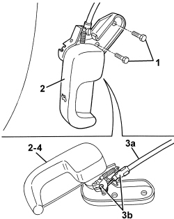

7025A24 BONNET LID OPENING LEVER - R+R
- Path
- Procedures > 70 FITTINGS > 7025 COMPARTMENT COVERS > 7025A BONNET LID > 7025A24 BONNET LID OPENING LEVER - R+R
- Kind
- repair procedure (removal / refitting; the operation number is the code)
- Applies to
- all engines; all production periods
- Interactive page
- https://sloeber94.github.io/elrnDB-aBrrSpdr/en/#/946002565
Applies to: all engines; all production periods
 Removing
Removing
 Refitting
Refitting1. Working under the dashboard in the area of the driver's side panel, unscrew the bolts securing the bonnet lid opening lever.
2. Move the lever slightly
3. Disconnect the control cable (3a) from lever retainers (3b).
4. Keep the lever.

Applies to: all engines; all production periods
Refitting
Removing- Connect the control cable to the lever retainers.
- Position the lever and tighten the bolts.
- Check the operation of the bonnet lid opening mechanism.